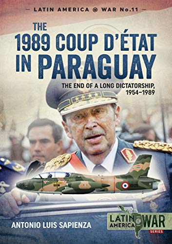

Categories:: Dictatorship; coup; Operation Condor; indigenous peoples; reparations law; truth commission; state museum; memorial sites.
Actors: Paraguayan armed forces; Uruguayan political parties (mainly the Partido Colorado, the sole party of the regime); Paraguayan civil organisations.
1954 : In May, Alfredo Stroessner, commander-in-chief of the armed forces, led a coup that overthrew Federico Chávez. A few months later, Stroessner assumed the presidency after running as the only candidate in the elections. The final report of the Comisión Verdad y Justicia lists 9,923 victims of human rights violations during this period (including 2,691 cases of torture, 59 executions and 336 disappearances), as well as 10,167 victims who were not included in the lists reviewed.
1959 :The death of Bernardo Aranda triggers a persecution of homosexuals in the country, known as Case 108.
1973 : The genocide of the Aché people is denounced internationally by Mark Munzel. Since the 1960s, Paraguayan and foreign intellectuals had been denouncing the violence perpetrated against various indigenous peoples. The latter had been victims of illegal land appropriation, sexual violence, enslavement and human trafficking, among other crimes.
1976 :Event known as the "Pascua dolorosa". The regime launched a bloody campaign of repression against peasant movements, mainly the Ligas Agrarias Cristiana in the Misiones province.
1988 :Marcha por la vida. A massive protest demonstration in Asunción on Human Rights Day was repressed by government forces.
1989 : A coup led by General Andrés Rodríguez ends the Stroessner regime as a result of internal strife. The Partido Colorado remained in power.
1992 : Documents from the so-called "Archive of Terror" are discovered.
2006 : The ruling of the Inter-American Court of Human Rights in the case “Goiburú and others vs. Paraguay” set a precedent by recognising the existence of Operation Condor.
Memory initiatives Informe Final de la Comisión de Verdad y Justicia - Anive haguâ oiko (2008): a document published as a result of the work of this Commission. It establishes the responsibility of the State and related bodies in the perpetration of crimes against humanity. Ley Nº 3603 (2008, y su precedente la Ley N° 838/96): a law establishing compensation for victims (and their families) whose human rights were violated by state action between 1954 and 1989.
Sites of Memory Museo de las memorias: Dictadura y derechos humanos: a museum in Asunción, opened in 2002 in one of the main detention and torture centres of the dictatorship, the Dirección Nacional de Asuntos Técnicos. Museo de la Justicia, Centro de Documentación y Archivo para la Defensa de los Derechos Humanos: institution that houses the approximately 700,000 documents that form part of the so-called "Archive of Terror", evidence of repressive activities in Paraguay and Latin America, including key data on the Operation Condor. Plaza de los desaparecidos: a public memorial, where the artist Carlos Colombino has re-adapted an effigy of Stroessner, trapping it between blocks. Abraham Cue: a place of remembrance in the Misiones departament, which served as a barracks, concentration camp and torture camp, linked to the events of the "Pascua dolorosa".
Organisations Comité de Iglesias para Ayudas de Emergencia (CIPAE): an organisation linked to the Catholic Church, active since 1976. Has published research on human rights abuses during the dictatorship. Coordinadora de derechos humanos en Paraguay (CODEHUPY): A group of civil society organisations, founded in 1999, dedicated to the defence of human rights. Mesa memoria histórica y archivos de la represión: A body that brings together various organisations of victims of the dictatorship and their families. Comisión Verdad y Justicia (CVR): Official body created in 2004 to investigate cases of human rights violations that occurred between 1954 and 2003. It became the Dirección General de Verdad, Justicia y Reparaciones (DGVJYR) in 2009.